Ilinca Struțu
Manager
Credem că sănătatea mintală nu trebuie tratată ca un lux sau o urgență, ci ca o parte firească a vieții de zi cu zi. Misiunea noastră este să oferim fiecărei persoane ghidarea potrivită la momentul potrivit – un sprijin accesibil, care ajută la înțelegerea de sine și la prevenirea dezechilibrului emoțional.

Manager
Software Developer
Persoanele care încearcă să își gestioneze activitățile zilnice, strâns legate de sănătatea mintală, folosesc azi o multitudine de aplicații izolate: pentru starea de spirit, somn, activitate, notițe sau comunicarea cu terapeutul. Fragmentarea face dificilă înțelegerea relației cauză–efect între obiceiuri și starea psihică, iar terapeuții au vizibilitate limitată între ședințe, ceea ce mută intervenția de la proactiv la reactiv.
Emoti integrează într-un singur loc jurnalul emoțional, monitorizarea obiceiurilor și activităților, plus comunicarea cu terapeutul. Pe baza datelor introduse, oferă recomandări personalizate de terapie și de specialiști. Astfel, sprijinul devine adaptat în timp real – cu o experiență unificată pentru utilizatori și terapeuți.
Publicurile noastre țintă pentru lansare și scalare.
Spre deosebire de aplicațiile care rezolvă un singur „colț” al problemei, Emoti creează un ecosistem unificat (jurnal, obiceiuri, activitate, comunicare cu terapeutul) și folosește analiza datelor pentru recomandări personalizate.
Problema a fost observată de Ilinca în urma şedinţelor ei de terapie. A remarcat faptul că în cele 50-60 de minute alocate unei şedinţe de terapie sau în timpul consultaţiei cu medicul psihiatru nu are timp să discute tot ce îşi doreşte sau există timpi morţi pentru ca nu îşi aminteşte toate ideile pe care voia să le introducă. În plus, terapeuţii au o vizibilitate limitată între şedinţe, ceea ce face ca sprijinul oferit să fie mai degrabă reactiv, de cât proactiv.
Astfel, prin discuţiile cu echipa, s-a ajuns la concluzia că o aplicaţie mobilă care întruneşte totul într-un singur loc. Aşa a apărut EMOTI, o aplicaţie mobilă gândită să îi pună utilizatorului la îndemână tot ce ţine de terapie: jurnal, urmărirea obiceiurilor şi comunicarea cu terapeutu, în timp ce acesta poate urmări progresul pacientului pe parcursul unei săptămâni şi ii poate da teme.
Având în vedere faptul că aplicaţia noastră este destinată atât pacientului, cât şi terapeutului, am hotărât să discutăm cu persoane din ambele grupuri pentru a observa dacă se lovesc de acelaşi probleme pe care le-am descoperit şi noi. Astfel, am decis să avem o serie de discuţii cu posibilii clienţi, atât face-to-face, cât şi telefonic. Punctele urmărite în cadrul discuţiilor noastre au fost:
Psihoterapeut, psiholog clinician
Felicia este psihoterapeut cu experienţă de aproape 20 de ani în domeniu şi ne-a ajutat enorm să înţelegem şi perspectiva terapeuţilor. Am aflat că da, o parte dintre pacienţii ei se confruntă cu aceeaşi problemă principală pe care am observat-o şi noi, aceea a timpului limitat al şedinţelor şi a volumului mare de informaţii ce trebuie transmise. Însă, pentru ea nu este foarte practic să aloce timp din programul deja încărcat pentru a citi mesaje lungi si detaliate despre diferite evenimente din viaţa pacientului pentru că este mult mai productiv să discute aceste lucruri live, în timpul şedinţelor, pentru o înţelegere mai bună a situaţiei. Ea ne-a mai transmis că da, ea dă teme pacienţilor, în funcţie de caz, dar tot ca mai devreme, preferă să analizeze rezultatele în cadrul şedinţelor cu pacientul. S-a pus foarte mult accentul pe timpul liber limitat dintre sedinţe, dar şi al efectului mai amplificat pe care o discuţie live îl are asupra evoluţiei pacientului. Ne-a mai spus că nu se opune ideii de a primi un mesaj scurt din partea pacienţilor în stilul "Bună! Putem să vorbim data viitoare despre X?" sau "Bună! Săptamâna asta s-a întâmplat Y!". În plus, ea ne-a spus că foloseşte atât Whatsapp, cât şi platforme precum GoogleMeets sau Zoom pentru şedinţe.
Corporate (pacient)
Andreea a început să facă terapie în urmă cu aproximativ doi ani şi ne-a mărturisit că simte că a ajutat-o foarte mult. Ea comunică în principal pe Whatsapp cu terapeuta ei pentru că face şedinţe online, dar a recunoscut că ar prefera fizic. Recunoaşte că nu a avut răbdarea necesară pentru a ţine un jurnal, dar vede beneficiile acestuia. În plus, a confirmat că nu are timp în cele 50 de minute ale şedinţei să discute tot ce are pe listă şi uneori încearcă se dozeze discuţiile. Ea mai mult se axează pe evenimente din trecut în cadrul şedinţelor.
Software Engineer
Smaranda face terapie adeleriană cu aceeaşi doamnă de mai mult de 2 ani şi se înţelege foarte bine cu ea. Şi ea a recunoscut că se uită constant la ceas şi uneori continuă discuţiile şi la alte şedinţe, dar i se pare că acest lucru ia din anvergura emoţiilor simţite. A observat că atunci când nu mai sunt subiecte de discuţie noi la unele şedinţe, terapeuta deja ştie ce subiecte au ramas neterminate şi le readuce în dicuţie. A recunoscut că jurnalul în format digital pe care îl ţine este doar pentru ea şi nu vrea să îl împărtăşească cu nimeni.
Software Engineer
Sabina face terapie de şase ani cu aceeaşi terapeută cu care se înţelege foarte bine. A remarcat că după un an şi ceva început să vorbească lucruri mai serioase cu aceasta şi că după o perioadă atât de lungă de terapie nu mai uită ce vrea să vorbească sau, maxim, îşi notează pe telefon ce idei mai are. Ea a recunoscut că a încercat să folosească aplicaţii de urmărire a obiceiurilor, dar stilul ei mai haotic duce la mai mulţi nervi pentru că o deranjează notificările constante (în momentul de faţă a recunoscut că şi-a oprit complet notificările pe telefon). Însă a fost foarte deschisă către o posibila veriune gamificată a aplicaţiei, cu un animăluţ care se supără dacă nu completezi în fiecare zi obiceiurile şi cu posibile recompense sub formă de haine pentru mascotă. În plus, ea ne-a spus că şedinţele se desfăşoară în format online, pe Whatsapp.
Profesoară de matematică
Elena s-a luptat încă din copilările cu diferite probleme care au dus-o să înceapă terapia încă din şcoala generală. Ea ne-a spus că pe parcursul pandemiei obişnuia să îşi noteze obiceiurile într+un jurnal cu grafice şi culori şi ca i-ar plăcea să folosească o aplicaţie de genul în momentul de faţă cu un widget care să îi permită logarea rapidă a datelor. În plus, ea a recunoscut că a plecat frustrată de la şedinţele de terapie pentru că nu a avut destul timp să vorbească tot ce avea pe suflet şi simte că dacă terapeutul ştia de la început, macar ân linii mari, despre ce vrea să vorbească, poate o ghida şi spre celelalte subiecte. A remarcat că pe parcursul şedinţelor de terapie nu prea era întrebată de obiceiurile ei, doar de vicii, cum e fumatul, dar consideră că o asemenea discuţie ar ajuta.
SAP Engineer
Miguel este un cetăţean străin, stabilit recent în România. El ne-a povestit experienţa sa cu un număr destul de mare de terapeuţi până când a găsit persoana potrivită. A remarcat că primea destul de des teme pe care le discuta la şedinţa următoare şi că o parte din începutul fiecărei şedinţe se pierdea cu recapitularea lucrurilor discutate anterior sau cu un mic rezumat a ceea ce s-a întâmplat în ultima săptămână. În plus, el ne-a spus că a discutat cu terapeuţii săi despre porgramul de somn şi calitatea somnului, dar nu era ceva constant. A recunoscut că a folosit aplicţii de urmărire a obiceiurilor, dar că îşi pierdea motivaţia dacă rata o zi din cauza algoritmului aplicaţiei.
Psiholog integrativ
Sabin a termina recent Facultatea de Psihologie şi lucrează în momentul de faţă ca psiholog integrativ sub supervizare. El ne-a transmis că foloseşte preponderent ca formă de comunicare cu pacienţii aplicaţia Whatsapp pentru că îi păermită să ţină şi şendinţe online, să transmită link-uri de plată sau locaţia exacta a cabinetului şi chiar materiale de stzdiu individual pentru pacienţi. Un plus mare pentru această aplicaţie, din perspectiva lui, este că nu are cum să rateze mesaje datorită sistemului bun de notificare şi a faptului că oricum foloseşte aplicaţia pentru comunicarea cu prietenii şi familia. Ne-a mai spus că nu a păţit până acum să primească mesaje lungi între consultaţii pe care să trebuiască să le citească până la următoarea şedinţă. Am mai aflat că el nu dă teme şi că nu e foarte interesat de jurnale. Un asfect important al discuţiei cu Sabin a fost că el nu pierde timpul la începutul şedinţei cu discuţii generice, introductive. El preferă să abordeze imediat suiectul pe care îş aduce în discuţie pacientul (Sabin: Cum a fost ultima săptămâne? Pacientul: Pai m-m certat cu şeful... Sabin: De ce? Cum te-ai simţit?). Putem spune, din convingerea lui Sabin despre Whatsapp, că aplicaţia noastră nu e cea mai potivită pentru el.
După o pivotare importantă, considerăm că da.
Click pe buton pentru a vedea prototipul navigabil.
Deschide wireframe FigmaPagina publică pentru prezentare.
Vezi landing pageAm adăugat pe pagina EMOTI un buton „Anunță-mă când lansați” care deschide un mic popup unde poți lăsa adresa de email ca să fii anunțat când lansăm aplicația. Formularul este integrat cu Formspree, astfel încât putem colecta în siguranță adresele de email, fără backend suplimentar.
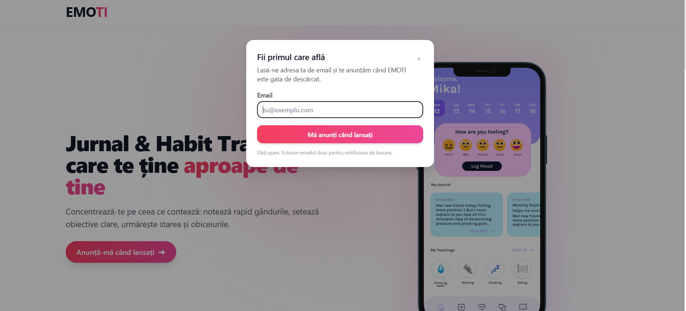
Principalele surse pe care le-am ales au fost grupuri de Facebook dedicate meditării, îmbunătățirii stării de spirit și bunăstării. În plus, am făcut și o postare pe TikTok și am postat și comentarii pe Reddite la postări legate de journalling. Mai multe detalii despre postari, puteti gasi aici
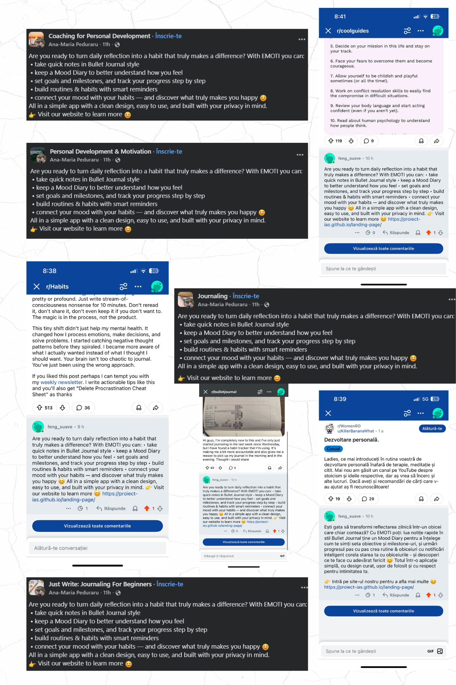
Pentru procesarea datelor am ales să folosim Posthog. Am creat un funnel pentru a vedea câți dintre utilizatrii care ajung pe platfomă dau click pe buton și care își completează adresa de mail. Adrese de mail sunt stocate în Formspree unde am ne-am creat un cont folosind o adresă de mail specială pentru aplicație the.emoti@gmail.com.
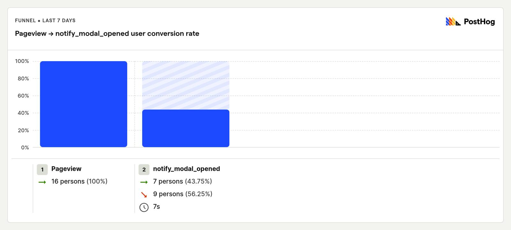
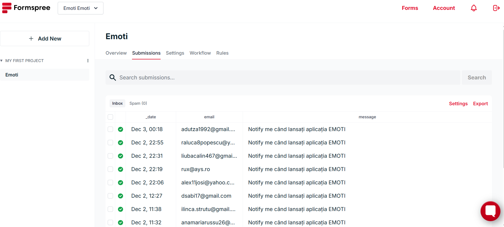
Deși până acum am avut puțin trafic pe site, putem remarca faptul că aproape jumătate din persoanele acre au intrat pe site, au dat click pe buton și apoi au completat adresa de mail. urmează să mai lucarm la promovarea aplicației pe mai multe platforme pentru a obține mai multe date.
Strategia începe în România pentru validarea produsului (MVP). Pe baza datelor locale (populație urbană 18-45 ani, digitalizată):
| Aplicație | Puncte forte | Lipsuri / Limitări |
|---|---|---|
| Daylio | Lider global pe micro-jurnal (selectezi o „față” și o activitate). Foarte simplu și rapid, potrivit pentru începători. | Limitat la monitorizarea stării de spirit. Nu are sistem avansat de formare a obiceiurilor și nici spațiu pentru jurnalizare detaliată (text lung). |
| Fabulous | Bazat pe știința comportamentală, design excelent, sistem gamificat de formare a rutinelor zilnice. | Preț foarte ridicat (abonament scump). Interfață complexă, uneori copleșitoare. Nu oferă spațiu real pentru descărcare emoțională (jurnal). |
| Headspace / Calm | Branduri globale recunoscute, conținut audio premium pentru meditație, relaxare și somn. | Funcțiile de jurnal sau habit tracking sunt minore sau inexistente. Accentul este pe conținut audio, nu pe organizare emoțională zilnică. |
| Metode clasice (Notes / Agenda / Notion) | Gratuite, accesibile, flexibile. Oricine le poate folosi fără abonament. | Nu oferă statistici, feedback emoțional, notificări motivaționale sau recompense vizuale. Lipsesc elementele de gamification și urmărirea progresului. |
Conluzie: Niciun concurent nu unifică perfect cele două nevoi: Jurnalizarea Emoțională (Reflecție) + Urmărirea Obiceiurilor (Acțiune/Disciplină) într-o interfață simplă și accesibilă ca preț pentru piața din România/Europa de Est. Majoritatea aplicațiilor sunt fie doar despre emoții (Daylio), fie doar despre productivitate (Fabulous/Notion). EMOTI le aduce pe ambele "sub același acoperiș".
| Platforma | Avantaje | Limite | Cota estimată piață RO* |
|---|---|---|---|
| Metode Clasice (Notes, Agenda, Excel) | Complet gratuite, flexibilitate maximă, nu necesită învățare. | Nu oferă motivație, statistici, notificări sau structură ghidată. | 55 – 60% |
| Daylio | Foarte simplu de folosit (doar click-uri), vizual plăcut, istoric bun. | Limitat strict la "Mood Tracking", fără funcții reale de formare a obiceiurilor. | 15 – 20% |
| Headspace / Calm | Calitate audio premium, branduri de încredere pentru relaxare. | Preț prohibitiv pentru România (~60€/an). Nu au funcții de jurnalizare. | 10 – 15% |
| Fabulous | Cel mai bun pe "Habit Building", design științific. | Prea complex și scump pentru utilizatorul mediu care vrea doar claritate. | 5 – 10% |
* Procentele reprezintă cota din "utilizatorii activi preocupați de self-care". Suma poate depăși 100% deoarece mulți utilizatori folosesc simultan o aplicație de meditație (ex: Headspace) și un jurnal simplu (Notes).
Folosim date din sondaj și tendințe de piață:
Total interes real validat: ~80% (utilizatori care au nevoie fie de organizare, fie de suport emoțional, sau ambele).
| An | Utilizatori activi EMOTI (estimare) | Market Share Estimat (din segmentul țintă)* |
|---|---|---|
| Anul 1 | 5.000 – 10.000 | ~ 0.5 – 1% |
| Anul 2 | 40.000 – 60.000 | ~ 3 – 5% |
| Anul 3 | 150.000 – 200.000 | ~ 10 – 12% |
| Anul 4 | 400.000 – 500.000 | Expansiune |
| Anul 5 | 800.000 – 1.000.000 | Lider Regional |
Aceste valori sunt justificabile deoarece:
Estimăm monetizarea realistă (model Freemium - majoritatea gratuit, minoritatea plătește):
~1 milion utilizatori interesați x 30€ (cost mediu anual) ≈ 30 Milioane € / an
Piața globală de aplicații de sănătate mintală (fără telemedicină) este evaluată la ~2.5 Miliarde €.
| An | Utilizatori activi EMOTI | Market Share Estimat (Local -> Global) | Valoarea Cotei (Venit Estimat ~2€) |
|---|---|---|---|
| Anul 1 | 5.000 | ~0.5% (RO) | 10.000 € |
| Anul 2 | 50.000 | ~3-5% (RO) | 100.000 € |
| Anul 3 | 200.000 | ~10% (RO) + Regional | 400.000 € |
| Anul 4 | 500.000 | Expansiune Internațională | 1.000.000 € |
| Anul 5 | 1.000.000 | Global | 2.000.000 € |
Piața de self-care din România este suficient de mare (~1 milion de potențiali utilizatori interesați de wellbeing) și activă în căutarea soluțiilor de echilibru emoțional pentru a justifica lansarea EMOTI. Într-o piață digitală unde utilizatorii trebuie să aleagă între aplicații strict pentru jurnal (ex: Daylio) sau strict pentru productivitate (ex: Fabulous), EMOTI deține un avantaj competitiv clar: unificarea celor două funcții într-o singură platformă simplă și accesibilă, rezolvând nevoia validată în sondaje.
Proiecția realistă indică o creștere de la 5.000 de utilizatori în Anul 1 la 1 milion de utilizatori în Anul 5 (prin extindere internațională), generând venituri estimate de până la 2 Milioane €. Eliminarea costurilor logistice cu terapeuții confirmă viabilitatea comercială și profitabilitatea ridicată a proiectului.
Pentru aceasta etapa de dezvoltare si testare, aplicatia este gazduita pe un server local gestionat de Expo CLI. Accesul la distanta este asigurat printr-un serviciu tunneling (ngrok), care permite rularea aplicatiei in timp real pe dispozitive fizice externe prin intermediul clientului Expo Go, fara a necesita o infrastructura cloud dedicata. Aplicatia mobile este realizata in React Native (via Expo), care poate rula nativ pe iOS si pe Android. Navigarea este gestionata prin Expo Router si stocarea datelor se face folosind Firebase. Frontend: React Native, Expo Limbaj: TypeScript Baza de date: Firebase (Firestore)
Meniul principal
Lista de obiceiuri (bifarea si crearea de noi obiceiuri)
Interfata de vizualizare a progresului
Salvarea starii zilnice
Calendar
Pagina cu rezumatul lunii
Răsfoiește interfața aplicației **EMOTI**. Am creat un design curat, optimizând contrastul și paleta de culori pentru a reduce oboseala vizuală și a facilita procesul de auto-reflecție.
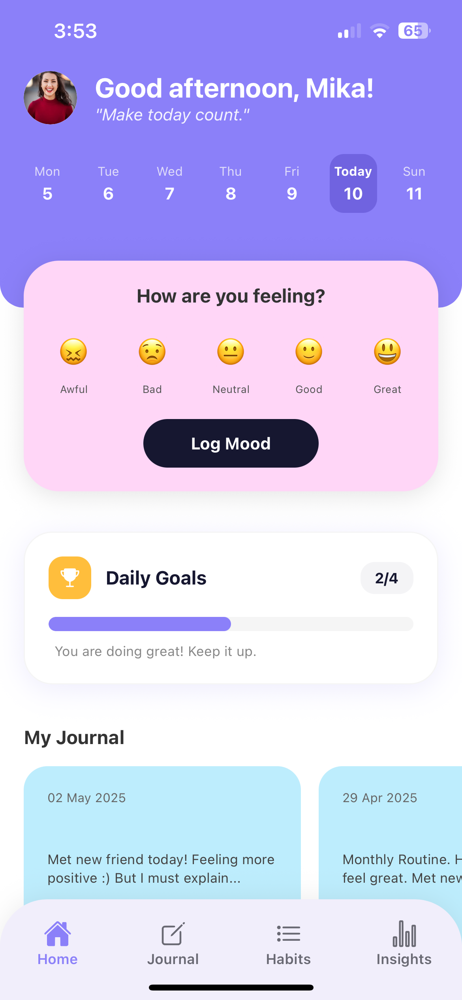
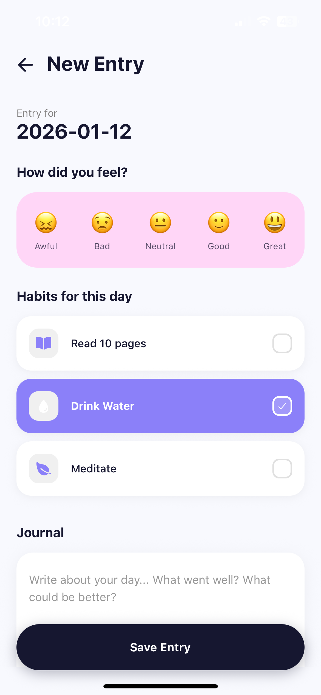
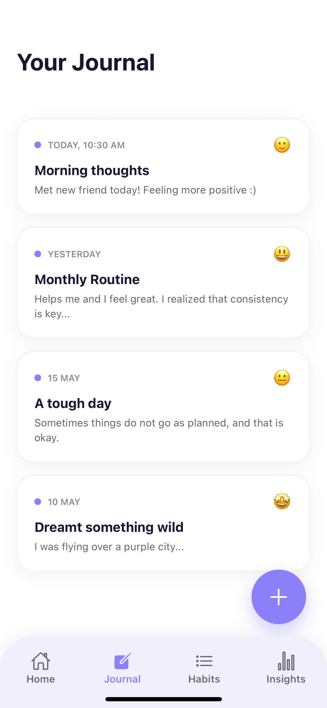
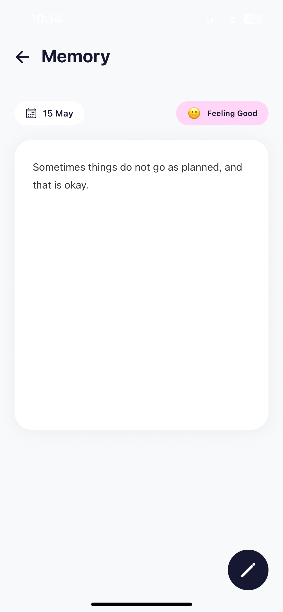
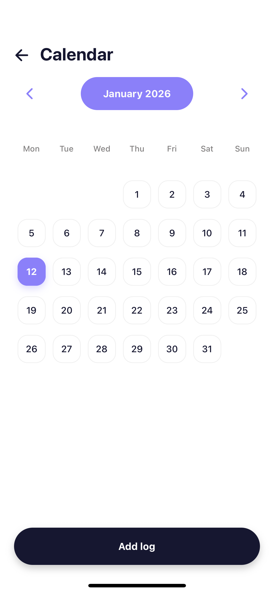
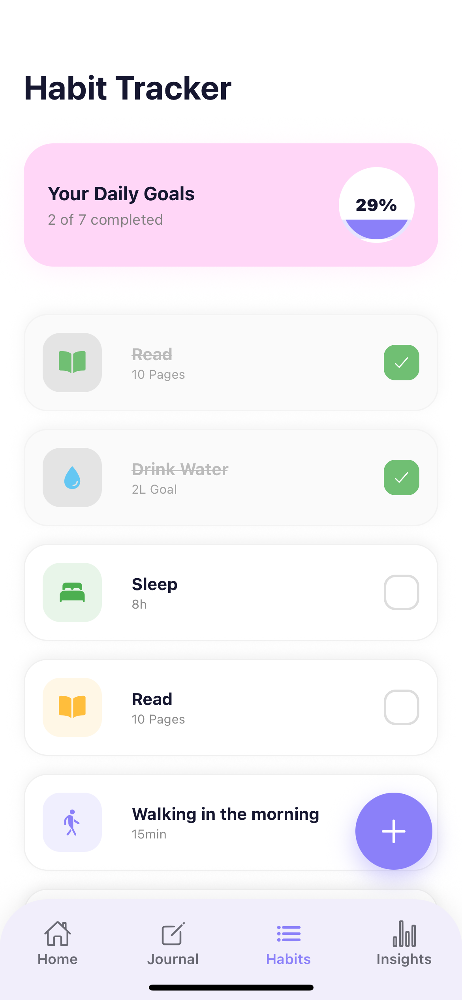
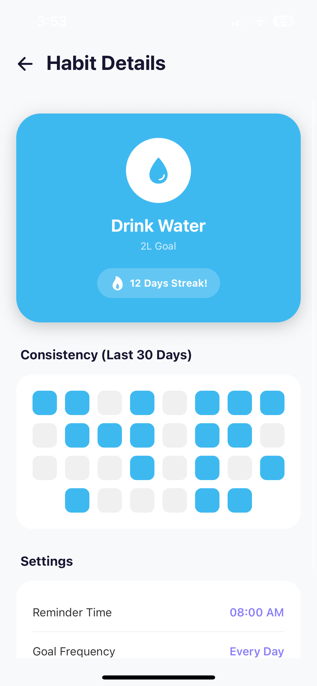
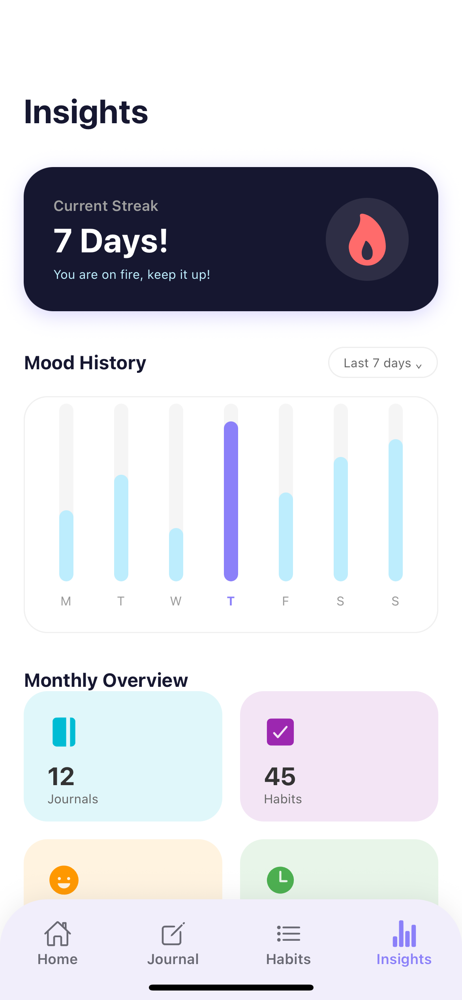